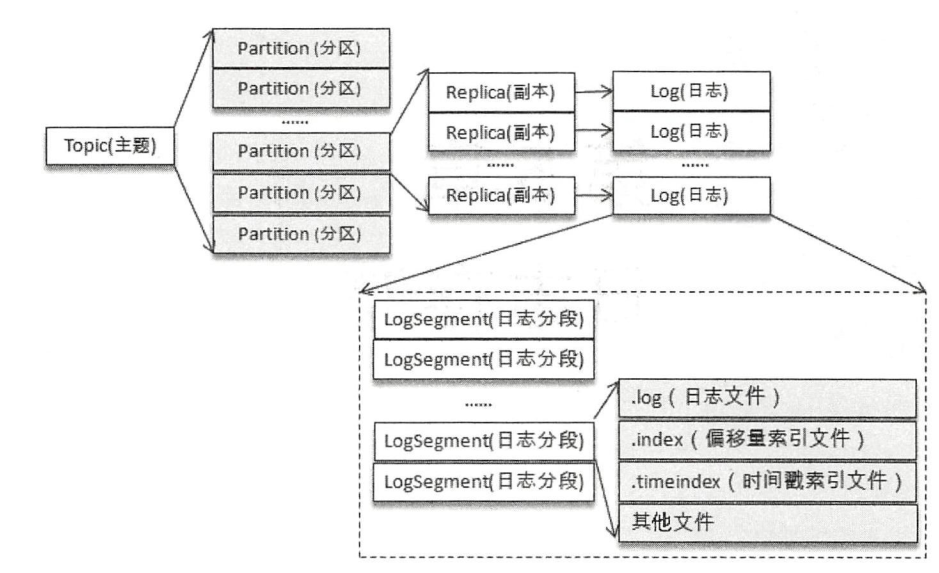
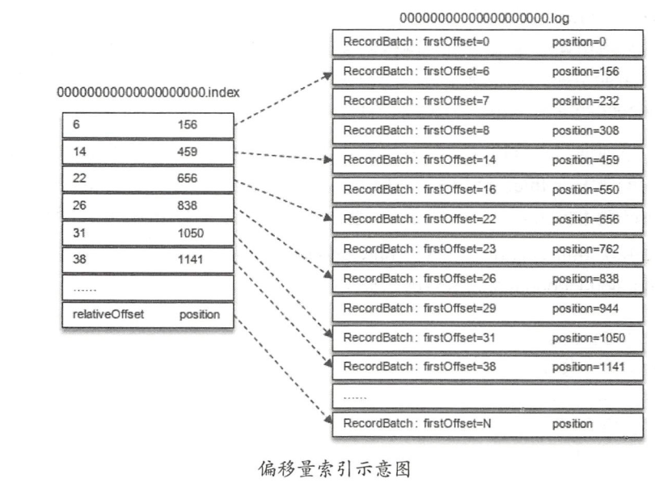
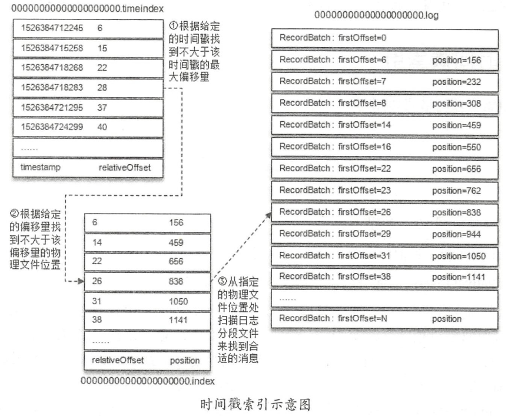
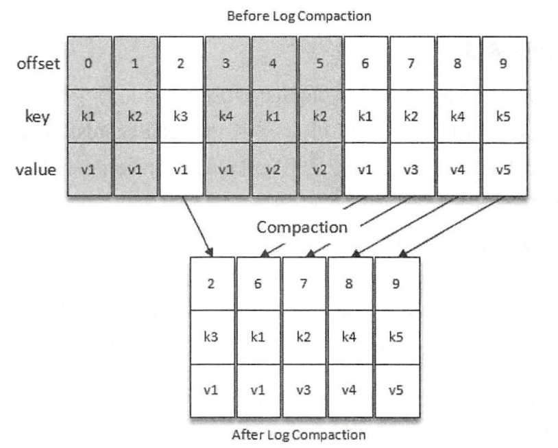

透彻理解Kafka（二）——消息存储：日志格式
Kafka可以对消息进行存储，写消息的本质就是写日志文件。在Kafka中，主题的一个分区，在操作系统层面就对应着一个目录，命名形式为＜topic>-<partition＞。本章，我就来讲解Kafka中的日志格式。
一、日志结构
1.1 分区目录
假设有一个名为“ topic”的主题，此主题具有 4 个分区 ，那么在物理存储上就有topic-0、topic-1、topic-2、topic-3四个目录：
[root@nodel kafka- logs]# ls -al | grep topic-log
drwxr-xr - x 2 root root 4096 May 16 18: 33 topic-0
drwxr-xr - x 2 root root 4096 May 16 18: 33 topic-1
drwxr-xr - x 2 root root 4096 May 16 18: 33 topic-2
drwxr-xr - x 2 root root 4096 May 16 18: 33 topic-3
1.2 日志段（LogSegment）
每个分区目录下，都有很多的log segment file（日志段文件），也就是说每个分区的数据会被拆分为多个段，放在多个文件里，每个文件还有自己的索引文件，如下图：

当生产者发送消息时，Kafka会将消息顺序写入最后一个 LogSegment 中，每个LogSegment 对应于磁盘上的一个日志文件和两个索引文件，以及可能的其它文件（比如以
.txnindex为后缀的事务索引文件），比如：TXT
00000000000000000000.index
00000000000000000000.log
00000000000000000000.timeindex
00000000000005367851.index
00000000000005367851.log
00000000000005367851.timeindex
00000000000009936472.index
00000000000009936472.log
00000000000009936472.timeindex每个 LogSegment 都有一个基准偏移量
baseOffset（64 位长整型数），用来表示当前 LogSegment中第一条消息的 offset 。比如上述的示例中，第一个 LogSegment 的基准偏移量为 0，对应的日志文件为00000000000000000000.log，而9936472就表示00000000000009936472.log这个日志段文件的起始offset。Kafka Broker中有一个参数
log.segment.bytes，限定了每个日志段文件的大小，最大为1GB。一个日志段文件满了，就会新建一个日志段文件来写入，避免单个文件过大，影响文件的读写性能，这个过程叫做log rolling，正在被写入的那个日志段文件叫做active log segment。> Kafka使用了
ConcurrentSkipListMap来保存各个日志分段，以每个日志段的baseOffset作为 key ，这样可以根据消息的偏移量快速定位到所在的日志分段 。### 1.3 索引文件
Kafka在写入日志文件的时候，会同时写索引文件，一个是位移（偏移量）索引（
.index后缀），一个是时间戳索引（.timeindex后缀），也就是说每个日志段中的日志文件（.log后缀）都对应两个索引文件。索引文件里的数据是按照位移/时间戳升序排序的，Kafka会用二分法查找索引，时间复杂度是O(logN)，找到索引就可以在
.log文件里定位到数据了。> Kafka以稀疏矩阵的方式构造索引，不保证每个消息都有对应的索引。Kafka Broker中有个参数
log.index.interval.bytes，默认值为4kb，表示每往日志文件写入4kb数据就要在索引文件里写一条索引项。#### 位移索引
位移索引就是用来记录消息偏移量（offset）与物理地址之间的映射关系。位移索引项的格式如下，每个索引项占用4个字节，分为两个部分：

relativeOffset：相对位移，表示消息相对于基准偏移量
baseOffset的位移，也就是说relativeOffset = 绝对位移 - baseOffset；position：物理地址，表示消息在日志分段文件中对应的物理位置。
举个例子：假设我们要查找
offset=25的消息，是怎样一个流程呢？1. 首先，由于Kafka使用了
ConcurrentSkipListMap来保存各个日志分段（以每个日志段的baseOffset作为 key） ，所以可以快速定位到offset=25这个消息所在的日志分段；2. 假设第一步定位到了
00000000000000000000.log这个日志分段，它的基准偏移量 baseOffset 为0，那么相对位移 = 25- 0 = 25；3. 接着，通过二分法在
00000000000000000000.index中查找最后一个relativeOffset ≤ 25的索引项，找到了[22，656]；4. 最后，根据索引项中的position值，即656，从
00000000000000000000.log中的656物理位置开始向后查找，直到找到offset=25的消息。
时间戳索引
时间戳索引项的格式如下图：
timestamp ： 当前日志分段最大的时间戳。
relativeOffset：时间戳所对应的消息的相对位移。
同样举个例子：假设我们要查找时间戳
targetTimeStamp = 1526384718288 开始的消息，是怎样一个流程呢？首先，要找到targetTimeStamp所在的日志段，这里无法使用跳表来快速定位，需要进行以下步骤：
1. 将 targetTimeStamp 和每个日志段中的最大时间戳 largestTimeStamp 逐一对比（每个日志段都会记录自己的最大时间戳），直到找到最后一个不小于targetTimeStamp 的日志段，假设就是
00000000000000000000.log这个日志段；2. 然后在这个日志段的时间戳索引文件
00000000000000000000.timeindex中进行二分查找，找到最后一个小于等于targetTimeStamp 的索引项，这里是1526384718283，它的相对位移是28；3. 接着，再根据相对位移28，去
00000000000000000000.index中查找消息的物理地址，找到了[26,838]这个索引项；4. 最后，从
00000000000000000000.log的838的物理位置开始向后遍历查找 targetTimeStamp = 1526384718288的消息。
从上面的整个流程也可以看出，根据时间戳索引查找消息时，要进行两次索引查找，效率要比直接根据位移索引查找低很多。
索引项中的 timestamp 必须大于之前追加的索引项的 timestamp ，否则不予追加 。如果 Kafka Broker 端参数
log.message.timestamp.type设置为LogAppendTime，那么消息的时间戳必定能够保持单调递增；相反，如果由生产者自己指定时间戳，则可能造成当前分区的时间戳乱序。
二、日志清理
Kafka本质是一个流式数据的中间件，不需要像离线存储系统那样保存全量的大数据，所以Kafka是会定期清理掉数据的。Kafka提供了两种日志清理策略：
- 日志删除（ Log Retention ） ： 按照一定的保留策略直接删除不符合条件的日志分段；
- 日志压缩（ Log Compaction ）：针对每个消息的 key 进行整合，对于那些key相同value不同的消息，只保留最后一个版本。
我们可以通过Kafka Broker端的参数log.cleanup.policy设置日志清理策略， 默认值为delete，即采用日志删除的清理策略。如果要采用日志压缩的清理策略，就需要将log.cleanup.policy设置为compact，并且还需要将log.cleaner.enable设置为true。
2.1 日志删除
Kafka默认只保留最近7天的数据，也就是说会把7天以前的.log、.index、.timeindex这些文件全部清理掉，可以设置log.retention.hours参数，自定义数据要保留多少天。
只要数据保留在Kafka里，你就可以通过指定offset随时搂出几天前的数据，进行数据回放。这种机制可以保证，即使下游Consumer消费数据丢失，也可以通过日志进行数据回溯。
在很多大数据应用的项目里，数据回放这个功能非常重要，比如你今天实时分析的一些数据出错了，那么你就需要把过去几天的数据重新搂出来回放一遍，重新计算。
2.2 日志压缩
Kafka中的日志压缩（Log Compaction），是指在默认的日志删除（ Log Retention ）策略之外提供的一种清理过时数据的方式。如下图所示， Log Compaction 对于有相同 key 的不同 value 值，只保留最后一个版本。如果应用只关心 key 对应的最新 value 值，则可以开启 Kafka 的日志清理功能，Kafka 会定期将相同 key 的消息进行合井，只保留最新的 value 值：
